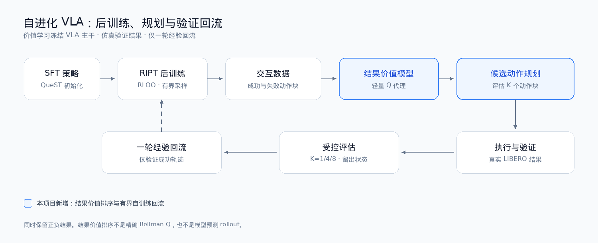

01 · 项目要解决的问题
让 VLA 不只模仿示范，还能从交互结果中改进
行为克隆只能从已有示范学习。这个项目关注三个更具体的问题：策略能否利用成功与失败轨迹继续训练，动态采样能否避免无上限重试，以及结果价值模型能否帮助推理时的动作选择。
交互后训练
从 SFT 策略出发，在 LIBERO 中采样多条轨迹，用任务奖励计算组内优势并执行 RLOO/PPO 更新。
可控采样
针对全成功或全失败轨迹组造成的零优势与重复采样，增加最大重试、预算耗尽保护和诊断日志。
自进化闭环
进一步学习任务专属结果价值模型，对候选动作块排序，并把仿真验证成功的经验用于一轮回流。
02 · 技术路线
训练时后训练、推理时候选规划、验证经验回流
QueST 主干在价值学习阶段保持冻结。候选动作在真实观测上生成，未选候选不进入仿真器；回流只使用仿真确认成功的轨迹，并限制为一轮。

03 · 核心实验结果
真实训练得到的结果，也保留没有奏效的模块
三个 LIBERO-Long 任务均完成真实 RIPT 训练、50 状态独立评估、任务专属价值模型和规划对照。
RIPT 三任务宏平均
74.7%
SFT 为 61.3%，提高 13.3 个百分点。
Task 6
88%
SFT 为 56%，单训练 seed 提高 32 个百分点。
回流＋规划
72%
两个评估 seed 均值，原规划为 66%。
价值模型
0.952AUROC
三个任务留出 AUROC 为 0.789–0.952。
需要同时看到的负结果：RIPT＋Planning 的三任务宏平均为 71.3%，低于 RIPT；三个任务的价值留出状态上，规划也均未改善。回流策略单独使用的两轮均值为 63%，低于原 E3 的 67%。
04 · 可复现性
不仅呈现成功率，也保留完整的实验数据链
真实训练与重载
三个任务均接受 120 组、1,920 条有效训练轨迹；最终 checkpoint 均实际加载运行，而非只评估官方权重。
受控比较
固定任务、初始状态与评估协议，分别给出全量 50 状态和最后 10 个价值留出状态，避免混用不同口径。
失败也可追溯
保留共同失败和训练后退化；CSV、视频、图表与研究笔记均在页面中直接展示。
05 · 页面导览
从方法到实验数据
结论边界：每个任务使用一个策略训练 seed，主任务回流另有两个评估 seed。结果不代表跨训练 seed 稳定性、完整论文复现、SOTA 或真机效果。结果价值模型是学习到的 Q 代理，不是精确 Bellman Q 函数。